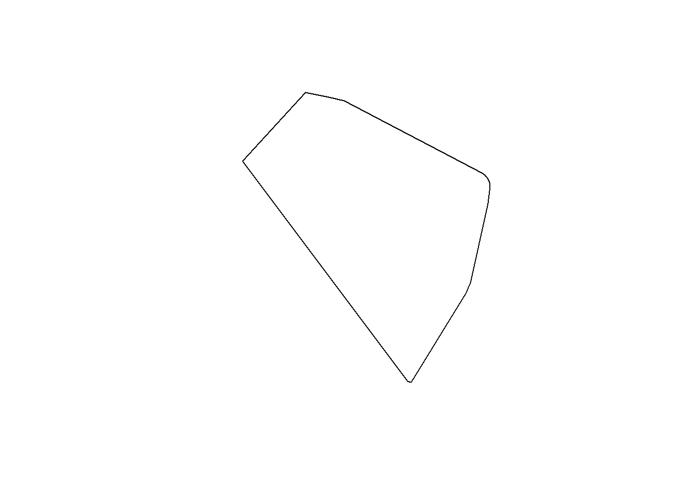
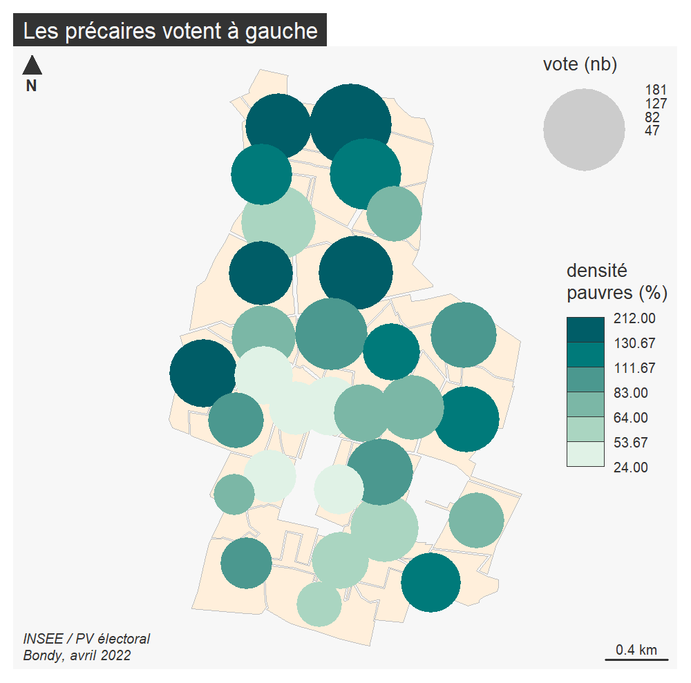

R spatial
B. Maranget
20/01/2021
1 Objet
R spatial avec la librairie sf (traitement des objets géographiques) et mapsf (cartographie)
sources :
Ne pas oublier les cheat_sheet
https://riatelab.github.io/mapsf/articles/web_only/cheat_sheet.html# Objets R spatiaux : le dataframe sf
2 Import
library(sf)## Linking to GEOS 3.9.0, GDAL 3.2.1, PROJ 7.2.1zone <- st_read("data/vote.gpkg", "zone")## Reading layer `zone' from data source
## `D:\sauveGIT\03_coursDashboard\data\vote.gpkg' using driver `GPKG'
## Simple feature collection with 32 features and 5 fields
## Geometry type: MULTIPOLYGON
## Dimension: XY
## Bounding box: xmin: 661088.1 ymin: 6865338 xmax: 663354.7 ymax: 6869043
## Projected CRS: RGF93 / Lambert-93# quel contenu pour le fichier ?
str(zone)## Classes 'sf' and 'data.frame': 32 obs. of 6 variables:
## $ Layer : chr "_Bureau 32" "_Bureau 24" "_Bureau 15" "_Bureau 14" ...
## $ bureauNo_1: chr NA "ECOLE ELEMENTAIRE OLYMPE DE GOUGES" "SALLE MAURICE PETITJEAN" "ECOLE MATERNELLE LEO LAGRANGE" ...
## $ aire : int 129558 260846 253109 229099 104115 230670 54899 91995 70288 140443 ...
## $ numBureau : int 32 24 15 14 12 30 5 9 28 26 ...
## $ txVotants : int NA 50 41 53 55 54 46 50 66 52 ...
## $ geom :sfc_MULTIPOLYGON of length 32; first list element: List of 1
## ..$ :List of 1
## .. ..$ : num [1:21, 1:2] 662713 662894 662926 663008 662925 ...
## ..- attr(*, "class")= chr [1:3] "XY" "MULTIPOLYGON" "sfg"
## - attr(*, "sf_column")= chr "geom"
## - attr(*, "agr")= Factor w/ 3 levels "constant","aggregate",..: NA NA NA NA NA
## ..- attr(*, "names")= chr [1:5] "Layer" "bureauNo_1" "aire" "numBureau" ...3 Indexation
Regarder l’indexation du dataframe dans la partie base R. Sélectionner le premier bureau et l’afficher. Quelle est la différence ?
zone$numBureau## [1] 32 24 15 14 12 30 5 9 28 26 27 22 21 25 7 23 1 19 3 2 18 29 8 17 13
## [26] 20 10 4 6 31 11 16zone [zone$numBureau == 1,]## Simple feature collection with 1 feature and 5 fields
## Geometry type: MULTIPOLYGON
## Dimension: XY
## Bounding box: xmin: 661781.8 ymin: 6866550 xmax: 662062.4 ymax: 6867135
## Projected CRS: RGF93 / Lambert-93
## Layer bureauNo_1 aire numBureau txVotants
## 17 _Bureau 01 HOTEL DE VILLE - SALLE DES FETES 98177 1 36
## geom
## 17 MULTIPOLYGON (((661895.1 68...zone [1,2]## Simple feature collection with 1 feature and 1 field
## Geometry type: MULTIPOLYGON
## Dimension: XY
## Bounding box: xmin: 662546.6 ymin: 6866000 xmax: 663008.4 ymax: 6866554
## Projected CRS: RGF93 / Lambert-93
## bureauNo_1 geom
## 1 <NA> MULTIPOLYGON (((662713.3 68...4 Operations géométriques
Fusion des bureaux de votes, trouver la fonction et l’appliquer en s’inspirant de l’article 3 du github sf
plot(zone$geom)
# première solution
fusion <- st_union(zone)
str(zone)## Classes 'sf' and 'data.frame': 32 obs. of 6 variables:
## $ Layer : chr "_Bureau 32" "_Bureau 24" "_Bureau 15" "_Bureau 14" ...
## $ bureauNo_1: chr NA "ECOLE ELEMENTAIRE OLYMPE DE GOUGES" "SALLE MAURICE PETITJEAN" "ECOLE MATERNELLE LEO LAGRANGE" ...
## $ aire : int 129558 260846 253109 229099 104115 230670 54899 91995 70288 140443 ...
## $ numBureau : int 32 24 15 14 12 30 5 9 28 26 ...
## $ txVotants : int NA 50 41 53 55 54 46 50 66 52 ...
## $ geom :sfc_MULTIPOLYGON of length 32; first list element: List of 1
## ..$ :List of 1
## .. ..$ : num [1:21, 1:2] 662713 662894 662926 663008 662925 ...
## ..- attr(*, "class")= chr [1:3] "XY" "MULTIPOLYGON" "sfg"
## - attr(*, "sf_column")= chr "geom"
## - attr(*, "agr")= Factor w/ 3 levels "constant","aggregate",..: NA NA NA NA NA
## ..- attr(*, "names")= chr [1:5] "Layer" "bureauNo_1" "aire" "numBureau" ...plot(zone$geom)
# deuxième solution
enveloppe <- st_convex_hull(fusion)
plot(enveloppe)
# troisième solution
tampon <- st_buffer(zone, 50)
plot(tampon$geom)
fusion <- st_union(tampon)
plot(fusion)
simplifier <- st_simplify(fusion,90, preserveTopology = F)
plot(simplifier)
5 Première carte
# carte avec commande rbase
plot(zone$geom, col = terrain.colors (31),
border = NA,
main = "31 bureaux de vote de Bondy")
# carte avec mapsf
library(mapsf)
mf_map(zone, type = "choro", border = NA,var = "aire")
# éliminer les bureaux 31 et 32
zone <- zone [zone$numBureau %in% seq(1,30),]
summary(zone)## Layer bureauNo_1 aire numBureau
## Length:30 Length:30 Min. : 54899 Min. : 1.00
## Class :character Class :character 1st Qu.:102057 1st Qu.: 8.25
## Mode :character Mode :character Median :146437 Median :15.50
## Mean :163750 Mean :15.50
## 3rd Qu.:223232 3rd Qu.:22.75
## Max. :367989 Max. :30.00
## txVotants geom
## Min. :35.00 MULTIPOLYGON :30
## 1st Qu.:42.25 epsg:2154 : 0
## Median :50.00 +proj=lcc ...: 0
## Mean :50.30
## 3rd Qu.:55.00
## Max. :69.00mf_map(zone, type = "choro", pal = "Burg",
border = NA, var = "txVotants")
6 Jointure attributaire
Mettre un lien entre la cartographie et le fichier de résultat des élections
data <- read.csv("data/bondyElection.csv", fileEncoding = "UTF-8", dec = ",")6.1 Les clés
zone$Layer## [1] "_Bureau 24" "_Bureau 15" "_Bureau 14" "_Bureau 12" "_Bureau 30"
## [6] "_Bureau 05" "_Bureau 09" "_Bureau 28" "_Bureau 26" "_Bureau 27"
## [11] "_Bureau 22" "_Bureau 21" "_Bureau 25" "_Bureau 07" "_Bureau 23"
## [16] "_Bureau 01" "_Bureau 19" "_Bureau 03" "_Bureau 02" "_Bureau 18"
## [21] "_Bureau 29" "_Bureau 08" "_Bureau 17" "_Bureau 13" "_Bureau 20"
## [26] "_Bureau 10" "_Bureau 04" "_Bureau 06" "_Bureau 11" "_Bureau 16"data$Bureau.de.vote## [1] "BV1" "BV2" "BV3" "BV4" "BV5"
## [6] "BV6" "BV7" "BV8" "BV9" "BV10"
## [11] "BV11" "BV12" "BV13" "BV14" "BV15"
## [16] "BV16" "BV17" "BV18" "BV19" "BV20"
## [21] "BV21" "BV22" "BV23" "BV24" "BV25"
## [26] "BV26" "BV27" "BV28" "BV29" "BV30"
## [31] "BV31" "BV32" "TOTAL" "Total en %"6.1.2 Faire l’algo
pour clé zone, extraire les deux derniers caractères
pour clé chiffres, extraire à partir du 3e caractère
vérifier si zone et chiffres correspondent
supprimer les lignes en trop
converir les clés en chiffres pour éviter le pb 01
jointure attributaire zone et chiffres
sauvegarder le résultat de la jointure
6.1.3 Donner les fonctions R
substring
as.integer
merge pour le jonction attributaire
6.1.4 Faire le script
dataSel <- data [c(1:32),]
zone$cle <- substring (zone$Layer,9,11)
dataSel$cle <- substring(dataSel$Bureau.de.vote, 3,5 )
dataSel$cle <- as.integer(dataSel$cle)
zone$cle <- as.integer(zone$cle)
length(zone$cle) == length(data$cle)## [1] FALSEjointure <- merge(zone, dataSel, by = "cle")
st_write(jointure, "data/vote.gpkg", "jointure", delete_layer = T)## Deleting layer `jointure' using driver `GPKG'
## Writing layer `jointure' to data source `data/vote.gpkg' using driver `GPKG'
## Writing 30 features with 18 fields and geometry type Multi Polygon.7 Carte des résultats
library(sf)
library(mapsf)
jointure <- st_read("data/vote.gpkg", "jointure", quiet = T)
names(jointure)## [1] "cle"
## [2] "Layer"
## [3] "bureauNo_1"
## [4] "aire"
## [5] "numBureau"
## [6] "txVotants"
## [7] "Bureau.de.vote"
## [8] "Nb.d.électeurs.inscrits"
## [9] "Nb.de.votants"
## [10] "Taux.de.participation...."
## [11] "Nb.votes.nuls"
## [12] "Nb.votes.blancs"
## [13] "Suffrages.exprimés"
## [14] "Résultats.liste.1...Liste.de.la.gauche.unie.pour.Bondy....Sylvine.THOMASSIN."
## [15] "Résultats.liste.2....Pour.Bondy.allons.plus.loin....Stephen.HERVE"
## [16] "Résultats.liste.3....Bondy.pour.une.gauche.sociale.insoumise.et.populaire....Jamal.AMMOURI"
## [17] "Résultats.liste.4....Bondy.autrement...Vincent.DUGUET"
## [18] "Résultats.liste.5....Bondy.c.est.vous...Sylvie.BADOUX"
## [19] "geom"Il s’agit de cartographier le résultat des colonnes 6 à 18 sauf la colonne 7
7.1 Algo
- tant que 6 < col < nb col - 1
- si col différent de 7
- faire 1 carte choroplèthe
- faire un titre
- si col différent de 7
- fin tant que
7.2 Fonctions
- mf_map( type = choro )
- mf_title
7.3 Carto
On extrait les noms des candidats
names(jointure)[14:18] <- c("THOMASSIN", "HERVE", "AMMOURI", "DUGUET", "BADOUX")nomCol <- names(jointure)
col <- 6
for (col in 6:18) {
if (col != 7) {
png(paste0("img/resultat", col, ".png"))
mf_map (jointure, type = "choro",
border = NA, var = nomCol [col])
mf_title(nomCol [col])
dev.off()
} else {col == 8}
}Les images sont enregistrées une à une.


8 Croiser grille INSEE et résultats des votes
Il s’agit de croiser résultats électoraux et carroyage de l’INSEE afin de confirmer une hypothèse.
Hypothèse : plus les gens sont modestes, plus ils votent la gauche.
On va illustrer cette hypothèse avec une carte combinant deux variables visuelles : taille et couleur.
La taille indiquera le nombre de votants, la couleur la densité des ménages pauvres.
8.1 Préparation de la donnée
8.1.1 Librairies et chargement des couches
library(sf)
library(mapsf)
vote <- st_read("data/vote.gpkg", "jointure")## Reading layer `jointure' from data source
## `C:\Users\tachasa\03_coursDashboard\data\vote.gpkg' using driver `GPKG'
## Simple feature collection with 32 features and 18 fields
## Geometry type: MULTIPOLYGON
## Dimension: XY
## Bounding box: xmin: 661088.1 ymin: 6865338 xmax: 663354.7 ymax: 6869043
## Projected CRS: RGF93 / Lambert-93insee <- st_read("data/insee.gpkg", "bondy")## Reading layer `bondy' from data source
## `C:\Users\tachasa\03_coursDashboard\data\insee.gpkg' using driver `GPKG'
## Simple feature collection with 188 features and 42 fields
## Geometry type: POLYGON
## Dimension: XY
## Bounding box: xmin: 661088.1 ymin: 6865338 xmax: 663354.7 ymax: 6869043
## Projected CRS: RGF93 / Lambert-938.1.2 Préparation des données
On filtre les colonnes et on calcule la densité de ménages pauvres.
names(vote)[c(3,14)] <- c("bureau", "vote")
vote <- vote [, c("bureau", "vote")]
# Pour obtenir un chiffre relatif, on divise le nombre de ménages pauvres par le nombre de ménages total
insee$densite <- (insee$Men_pauv / insee$Men)*100
insee <- insee [, "densite"]
hist(insee$densite, main = "densité des ménages pauvres")
En général, sur Bondy, il y a 15-20 % de ménages pauvres. Certains quartiers ont plus de 50 % de ménages pauvres mais cela reste exceptionnel.
8.2 Traitement
8.2.1 Intersection
Afin de pouvoir croiser grille et polygone, il faut d’abord intersecter les deux de façon à récupérer le nom du bureau de vote pour chaque carreau de la grille.
inter <- st_intersection(vote, insee)
summary(inter)## bureau vote densite geom
## Length:357 Min. : 47.0 Min. : 0.00 GEOMETRYCOLLECTION: 2
## Class :character 1st Qu.: 88.0 1st Qu.:15.79 MULTIPOLYGON : 25
## Mode :character Median :110.0 Median :21.88 POLYGON :330
## Mean :107.3 Mean :22.84 epsg:2154 : 0
## 3rd Qu.:120.0 3rd Qu.:27.83 +proj=lcc ... : 0
## Max. :181.0 Max. :48.88# la cartographie des multipolygones ne fonctionne pas, on passe tout en polygone
inter <- st_cast(inter, "POLYGON")8.2.2 Une première cartographie
mf_export(inter, filename ="img/propchoroF.png", width = 1000, res = 200, expandBB = c(0,0,0,0.6))
mf_map(inter, col = "orange", border = "antiquewhite1")
mf_map(inter, type ="prop_choro", var = c("vote", "densite"), leg_pos = c("topright", "right"))
mf_layout("Euh...", credits = "INSEE / PV Electoral\nBondy, avril 2022")
dev.off()## png
## 2
Il est absurde de cartographier les résultats par carreau. Mais agréger les carreaux aux bureaux permettra d’avoir une carte lisible.
8.3 Agrégation
Pour chaque bureau de vote, il faut calculer la somme de la densité des ménages pauvres.
On intersecte insee et bureaux, puis on calcule la densité ménages par rapport à la taille du carreau, puis on somme tous les carrés dans un bureau.
# La taille du carroyage est normalement 200 *200
200*200## [1] 40000# taille du carré
st_area(inter)## Units: [m^2]
## [1] 2.122679e+01 2.024926e+03 3.135005e+04 4.754607e+03 3.239491e+04
## [6] 3.999163e+04 3.999358e+04 1.954717e+04 1.823731e+03 1.439933e+04
## [11] 2.202121e+04 1.579569e+04 2.478145e+03 3.518522e+04 3.325654e+02
## [16] 9.002025e+03 2.899305e+04 5.180168e+01 7.384069e+03 1.893581e+04
## [21] 6.842423e+03 3.860953e+04 5.587639e+02 8.904872e+03 1.000509e+04
## [26] 3.736588e+04 1.396785e+01 3.035877e+02 2.765974e+04 9.125849e+03
## [31] 1.500683e+04 1.151303e+03 4.751447e+03 2.552953e+04 4.239836e+02
## [36] 3.882864e+04 2.534872e+04 2.472424e+04 7.407254e+03 2.660728e+02
## [41] 1.111369e+04 3.952189e+04 1.300702e+02 2.137273e+04 1.274985e+02
## [46] 1.576980e+04 2.785676e+03 3.601823e+04 2.858931e+04 2.340401e+02
## [51] 4.550401e+03 2.397689e+04 6.599400e-01 1.106208e+02 9.644265e+02
## [56] 3.467207e+04 2.703120e+04 6.797458e+03 2.381519e+04 9.455134e+03
## [61] 1.869925e+04 1.713383e+04 5.245461e+02 2.286393e+04 7.395764e+03
## [66] 4.158838e+01 3.872581e+04 1.554704e+01 1.500348e+04 8.998292e+02
## [71] 2.520693e+04 1.315115e+04 1.420903e+04 1.095875e+04 2.702555e+04
## [76] 4.322359e+03 3.259036e+04 1.143977e+02 2.495693e+04 9.800867e+02
## [81] 1.127399e+04 3.901770e+04 5.798764e-04 3.824620e+04 4.173913e+02
## [86] 6.112986e+03 1.224695e+04 2.549685e+04 7.606479e+03 9.104193e+03
## [91] 1.910756e+04 1.234182e+04 2.063720e+04 2.867048e+03 5.486850e+03
## [96] 5.071303e+03 8.928984e+00 2.455940e+04 2.420302e+03 3.287610e+04
## [101] 1.871965e+04 9.583857e+03 2.441153e+04 6.839925e+03 2.705370e+03
## [106] 9.992819e+01 4.016047e+02 1.425014e+04 2.115666e+04 6.426741e+02
## [111] 6.367799e+03 6.282571e+02 7.423716e+03 1.771142e+01 2.832275e+04
## [116] 7.018451e+02 2.796008e+04 1.195871e+04 1.956011e+04 3.998686e+04
## [121] 5.300873e+03 3.072568e+04 4.930435e+02 3.999447e+04 3.710372e+04
## [126] 1.337355e+02 1.734239e+04 3.491926e+02 1.753443e+04 3.987117e+03
## [131] 9.770859e+03 1.286262e+04 7.815383e+01 8.077320e+03 9.842254e+03
## [136] 1.267846e+02 2.475269e+04 3.406950e+01 1.457295e+03 3.362867e+04
## [141] 4.515400e+03 2.154842e+02 3.916117e+04 1.202619e+02 3.477802e+03
## [146] 2.817554e+04 3.266950e+04 3.977052e+03 9.630170e+02 2.502633e+03
## [151] 1.276790e+04 4.409719e+03 2.140970e+04 1.159864e+01 8.551624e+03
## [156] 1.862804e+04 9.129964e+03 2.853307e+04 1.452849e+04 1.693144e+04
## [161] 4.877828e+03 1.152254e+04 1.413705e+01 2.289350e+04 3.501552e+04
## [166] 1.920746e+03 6.875360e+03 3.999445e+04 2.788545e+01 2.364396e+04
## [171] 1.012808e+04 3.310808e+02 2.256868e+04 2.291076e+03 1.557977e+04
## [176] 1.889227e+04 3.962090e+04 2.891754e+02 2.760950e+04 4.574653e+03
## [181] 3.715687e+03 2.417961e+04 1.167288e+04 1.728668e+04 6.108078e+03
## [186] 2.405410e+02 2.439771e+04 1.717339e+04 2.092993e+04 9.954863e+03
## [191] 4.826615e+03 1.558879e+04 1.605028e+04 4.147102e+03 1.202575e+04
## [196] 2.505036e+04 1.265084e+02 4.322504e+02 3.697793e+04 1.174970e+03
## [201] 1.495105e+04 2.129885e+03 1.875382e+04 2.729800e+03 3.979011e+03
## [206] 3.438351e+04 4.932216e+03 1.256677e+02 1.040713e+03 1.660567e+04
## [211] 1.857062e+04 2.136015e+03 1.938307e+04 1.436163e+04 4.314723e+02
## [216] 1.829698e+01 1.618947e+02 1.140605e+04 2.016153e+04 2.939008e+04
## [221] 6.707659e+02 1.111404e+04 3.068662e+03 3.707365e+04 1.821085e+03
## [226] 6.967420e+03 1.035003e+03 1.065304e+03 5.499651e+01 1.500734e+04
## [231] 3.614861e+03 3.692906e+03 2.066246e+03 3.679966e+04 3.883818e+04
## [236] 1.594486e+04 2.022332e+04 8.154091e+01 2.542806e+04 1.116143e+04
## [241] 2.792827e+04 1.585551e+02 2.251380e+03 5.381323e+03 3.999400e+04
## [246] 1.052842e+04 8.126957e+03 1.072893e+04 4.195839e+03 3.696724e+04
## [251] 1.411930e+03 2.690999e+03 3.317527e+04 9.352913e+01 3.960814e+04
## [256] 2.441296e+04 1.345474e+04 3.605208e+04 2.020485e+02 3.788353e+04
## [261] 9.914516e+02 1.491410e+04 2.042135e+04 2.033417e+04 1.758169e+04
## [266] 9.109237e+03 9.593463e+03 1.548609e+04 1.197039e+03 1.192752e+04
## [271] 2.058325e+04 2.292073e+03 1.155381e+04 2.434078e+04 5.845734e+03
## [276] 3.107306e+04 9.985863e+03 8.589654e+03 3.556711e+04 4.327495e+03
## [281] 1.378138e+02 3.318560e+04 3.254244e+04 3.695524e+03 3.139551e+04
## [286] 3.267302e+03 1.343977e+03 2.335315e+04 1.003934e+04 1.332395e+03
## [291] 1.099079e+03 4.999343e+03 3.070428e+04 3.067842e+04 1.529504e+02
## [296] 6.910052e+02 4.622533e+03 1.250679e+03 1.541646e+03 3.515435e+04
## [301] 3.999392e+04 4.988889e+02 2.465185e+04 1.144528e+03 1.902408e+02
## [306] 2.469512e+04 4.452627e+03 1.435546e+04 1.736393e+04 3.655079e+03
## [311] 5.596957e+03 3.217286e+03 2.658338e+04 3.756353e+04 1.259589e+03
## [316] 2.867859e+04 7.515169e+03 1.219877e+03 7.397034e+01 2.464706e+04
## [321] 3.759119e+04 1.668601e+04 1.309525e+04 3.999339e+04 2.893459e+02
## [326] 2.156837e+04 5.962701e+03 2.244380e+04 1.404473e+04 1.382156e+04
## [331] 7.285749e+03 1.441133e+04 3.999451e+04 2.946790e+04 3.423588e+03
## [336] 2.687908e+03 4.130910e+02 6.302249e+03 4.711979e+03 3.178842e+02
## [341] 1.706027e+04 2.087451e+04 1.625332e+04 1.070720e+04 2.547300e+04
## [346] 2.043096e+04 1.708607e+04 7.722586e+01 1.926648e+03 3.211436e+04
## [351] 2.568958e+02 9.675848e+02 2.582799e+04 1.225385e+04 4.016170e+02
## [356] 4.816923e+01 2.352935e+04st_area(insee)## Units: [m^2]
## [1] 39993.79926 39993.73430 39993.77762 39993.31220 39993.57714 39993.76679
## [7] 39993.72346 39993.50144 39993.71262 702.54682 12056.79672 39993.51227
## [13] 39993.75597 34169.99624 39993.30140 39993.56634 39993.78844 5083.83817
## [19] 27268.59590 39993.49062 3832.67427 38959.89885 39993.52309 36881.84685
## [25] 39994.17944 39993.55553 17771.09547 39993.54472 39993.70178 39993.74513
## [31] 38901.30937 291.78990 39994.31813 32244.66327 8781.11552 30401.68589
## [37] 39691.13394 36321.93056 39993.53390 39994.73244 39993.88338 22110.07716
## [43] 39994.72153 25769.10739 348.00238 39994.30726 39994.20117 3917.72357
## [49] 39994.29639 39994.22288 39993.33380 39993.34459 39994.28552 39993.86171
## [55] 39994.16858 39994.15771 39994.71063 9239.01822 32399.13802 39921.47984
## [61] 14807.27767 39993.87255 39994.14683 39993.32300 39994.69971 39995.01938
## [67] 39994.99749 7196.07610 39994.19031 39995.00844 11541.81416 39994.46522
## [73] 39993.89422 17.00711 39994.68880 39993.85087 39993.82918 39994.91274
## [79] 39994.21203 153.96641 39994.89087 39994.59332 39993.80748 38206.97559
## [85] 643.92565 39993.67194 39994.90181 39993.81833 39822.77126 39994.26376
## [91] 39994.25288 39993.90504 39994.45431 39994.62602 39994.67788 39994.13596
## [97] 39994.12508 21802.74686 39994.24199 39994.01913 28030.23782 39993.66112
## [103] 34349.33566 39993.93498 39993.94584 39993.65030 39993.68275 39993.62865
## [109] 39994.42431 39994.49791 39994.66696 39993.61782 39993.63948 37891.61982
## [115] 39994.78434 39993.59616 39994.51968 30807.65033 39993.97839 39993.60699
## [121] 18006.50471 926.53574 39994.41343 19598.28402 39993.96754 39994.27464
## [127] 39993.95669 39673.89947 39994.40255 39994.00007 39994.60423 39938.84878
## [133] 39994.33722 2008.97167 88.14423 39993.84003 39994.48701 39994.93460
## [139] 39994.38079 39994.53057 39994.92367 39994.47612 39993.39598 39994.79526
## [145] 39994.80619 24106.05434 39993.98923 39994.61512 39993.90240 39994.01091
## [151] 39993.40679 39994.39167 39993.42841 39994.58242 39993.45002 12823.91597
## [157] 39994.05173 39994.81711 39993.92412 10559.57446 39993.43922 35871.99045
## [163] 24672.22322 39994.57151 39994.23111 39993.46082 39994.03000 30540.04041
## [169] 39993.91326 39993.47161 39993.38516 6935.47399 39994.56060 39994.10601
## [175] 39994.04087 39994.50880 5261.20574 39994.09516 13923.16935 6440.62191
## [181] 39994.11685 19145.67901 39994.07345 39993.41760 11567.67542 36977.15215
## [187] 39994.08431 39994.06259# Il ne faut pas oublier les carreaux frontières...
# certains carreaux sont coupés par les limites des bureaux. la densité des ménages doit être rapportée à l'aire de la géométrie.
insee$aireTot <- st_area(insee)
inter <- st_intersection(vote, insee)
inter$nbRel <- (inter$densite * (st_area(inter)/ inter$aireTot) )
hist(inter$nbRel, main = "densité des ménages pauvres relatif à la taille des carreaux", xlab = "valeur de la densité", ylab = "nb d'occurence")
Ici, en utilisant la taille des morceaux de carreaux, on obtient beaucoup de zones avec une densité faible et quelques unes avec une grosse densité.
# Enfin, on agrége les carreaux aux bureaux
agg <- aggregate (inter$nbRel , by = list(inter$bureau), sum )
agg## Group.1 x
## 1 CENTRE DE LOISIRS - SALLE COLUCHE 76.19402 [1]
## 2 CENTRE DE LOISIRS APPOLINAIRE 45.92529 [1]
## 3 CENTRE DE LOISIRS COLUCHE - SALLE POLYVALENTE 59.68268 [1]
## 4 CENTRE DE LOISIRS PIERRE CURIE 119.12057 [1]
## 5 ECOLE ELEMENTAIRE ANDRE BOULLOCHE 145.33502 [1]
## 6 ECOLE ELEMENTAIRE JULES FERRY 84.85380 [1]
## 7 ECOLE ELEMENTAIRE LEO LAGRANGE 101.73808 [1]
## 8 ECOLE ELEMENTAIRE MAINGUY-GUEHENNO 23.81503 [1]
## 9 ECOLE ELEMENTAIRE NOUE CAILLET 130.09326 [1]
## 10 ECOLE ELEMENTAIRE OLYMPE DE GOUGES 118.97452 [1]
## 11 ECOLE ELEMENTAIRE PASTEUR 69.98560 [1]
## 12 ECOLE ELEMENTAIRE SALENGRO 111.00921 [1]
## 13 ECOLE MATERNELLE CAMILLE CLAUDEL 63.71893 [1]
## 14 ECOLE MATERNELLE HENRI SELLIER 81.10840 [1]
## 15 ECOLE MATERNELLE JEAN ZAY 212.24093 [1]
## 16 ECOLE MATERNELLE JULES FERRY 58.46468 [1]
## 17 ECOLE MATERNELLE LEO LAGRANGE 123.60089 [1]
## 18 ECOLE MATERNELLE MAINGUY 87.40522 [1]
## 19 ECOLE MATERNELLE NOUE CAILLET 59.69507 [1]
## 20 ECOLE MATERNELLE PASTEUR 148.15917 [1]
## 21 ECOLE MATERNELLE PIERRE CURIE 55.07457 [1]
## 22 ECOLE MATERNELLE ROGER SALENGRO 70.43217 [1]
## 23 ECOLE MATERNELLE TERRE SAINT BLAISE 133.92518 [1]
## 24 ESPACE MARCEL CHAUZY 47.16339 [1]
## 25 GYMNASE AIACHE 139.33991 [1]
## 26 GYMNASE AIACHE - SALLE DANSE 64.16970 [1]
## 27 GYMNASE LEO LAGRANGE 104.02640 [1]
## 28 HOTEL DE VILLE - SALLE DES FETES 47.47884 [1]
## 29 SALLE BLANQUI - ESPACE MANDELA 38.78532 [1]
## 30 SALLE MAURICE PETITJEAN 112.74658 [1]names(agg) <- c("bureau", "densite")
# jointure
names(vote)## [1] "bureau" "vote" "geom"jointure <- merge(vote, agg, by = "bureau")
names(jointure)## [1] "bureau" "vote" "densite" "geometry"jointure$densite <- round(jointure$densite,0)
jointure$densite## Units: [1]
## [1] 76 46 60 119 145 85 102 24 130 119 70 111 64 81 212 58 124 87 60
## [20] 148 55 70 134 47 139 64 104 47 39 113# Problème sur les unités m2, il faut s"en débarasser.
library(units)
jointure$densite <- drop_units(jointure$densite)mf_export(inter, filename ="img/propchoroT.png", width = 1000, res = 200, expandBB = c(0,0,0,0.8))
mf_map(jointure, col = "antiquewhite1", border = "grey")
mf_map(jointure, type ="prop_choro", var = c("vote", "densite"), border = NA, leg_pos = c("topright", "right"), leg_title = c("vote (nb)", "densité\npauvres (%)"))
mf_layout(title = "Les précaires votent à gauche", credits = "INSEE / PV électoral\nBondy, avril 2022")
dev.off()## png
## 2
L6ECSIG Construction et utilisation des SIG
6.1.1 Comment recoder pour faire correspondre les clés ?
La clé des zones est de type : _Bureau Num Celle des chiffres est de type : BVNum
Il faut donc recoder les valeurs.
Pour faire correspondre les deux clés, il suffit de retirer les lettres et garder uniquement les chiffres.